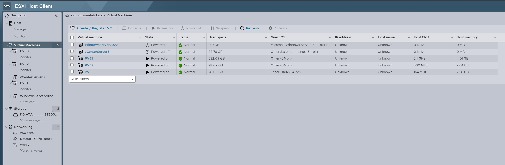

Building and managing
reliable IT infrastructure.
I'm Henry Anchante, a Senior Infrastructure and Virtualization Engineer with over 20 years of experience working with enterprise servers, data center infrastructure, VMware virtualization and Linux systems. My current work includes Proxmox VE, private cloud environments and infrastructure automation.
About Me
My background is rooted in hands-on infrastructure engineering: deploying physical servers, configuring VMware environments, managing Windows Server and Linux systems, maintaining enterprise storage, and troubleshooting production infrastructure.
I hold the VMware Certified Professional 5 - Data Center Virtualization (VCP5-DCV) credential, awarded in 2013. Today I continue expanding my practical work with Proxmox VE, open-source infrastructure, automation and AI-assisted operations.
Based in Brandon, Florida. Founder of My Support 365.
My Infrastructure Lab
A dedicated environment for testing virtualization, Linux, clustering, storage and infrastructure automation. The lab runs on an HP Z640 workstation with VMware ESXi 8.0 and three nested Proxmox VE nodes.
6 vCPU · 12 GB RAM · 20 GB disk
6 vCPU · 8 GB RAM · 20 GB disk
8 vCPU · 8 GB RAM · 20 GB disk
Lab Architecture
Nested virtualization lab for hands-on engineering and testing. All nodes share the same physical host.
Real Lab Deployment
The following screenshot documents my Proxmox VE laboratory running as nested virtual machines on VMware ESXi 8.0.
VMware ESXi Host — Proxmox Nodes

PVE1, PVE2 and PVE3 are powered on and reporting normal status in the VMware ESXi Host Client. This is the foundation for upcoming clustering, storage and infrastructure automation exercises.
Technical Projects
Documenting real configurations, procedures, testing results and lessons learned as each phase is completed.
Proxmox VE on ESXi 8.0
Three nested Proxmox VE servers provisioned for infrastructure experiments.
Proxmox Clustering
Cluster membership, quorum, node management and migration testing.
ZFS & Ceph Storage
Storage pools, replication, fault simulation and recovery exercises.
Linux Administration
System services, networking, storage, logs and troubleshooting procedures.
Backup & Recovery
Backup procedures, restore testing and disaster recovery documentation.
AI-Assisted Operations
Supervised automation, monitoring and infrastructure management workflows.
Credentials & Training
VMware Certified Professional 5
Data Center Virtualization (VCP5-DCV)
VMware vSphere 5.1
Install, Configure, Manage — Certificate of Completion
VMware Site Recovery Manager 5.1
Install, Configure, Manage — Certificate of Completion
Connect
Interested in virtualization, Linux infrastructure, Proxmox VE, data center engineering or technical consulting?